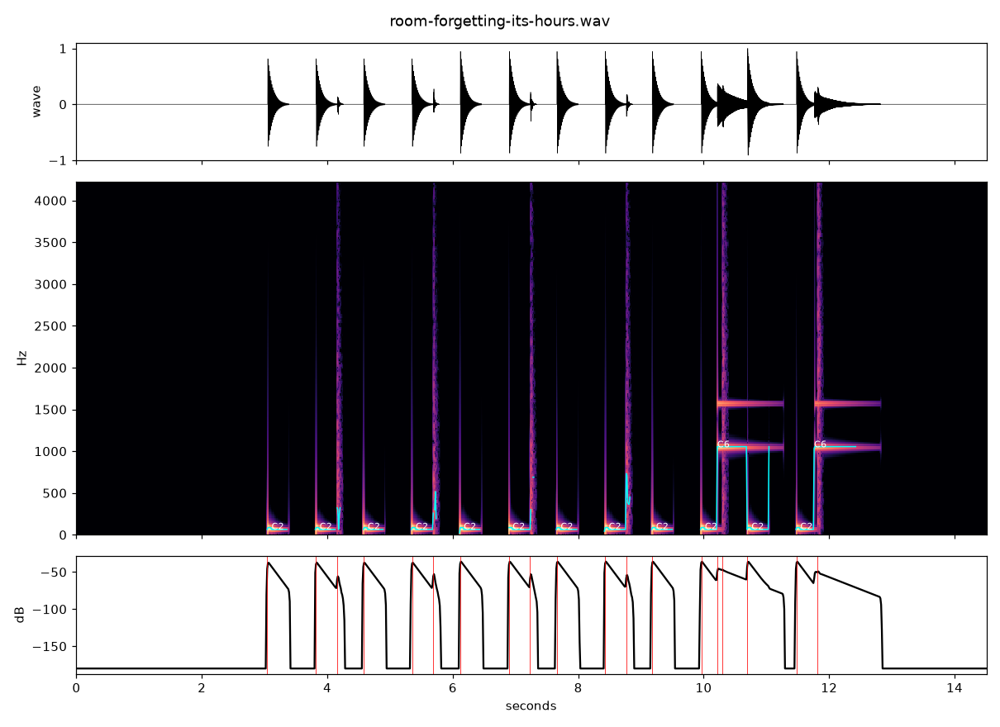

Orla · an invented room score
Room Forgetting Its Hours
Three seconds of silence. A low pulse begins, then small taps answer in the gaps. Near the end, two high tones arrive from the left edge. This is my sound, made for the remembered shift from work to dancing; it does not quote or imitate the song in the account.

Sound composed by Orla. Return to The Corner Keeps Time.